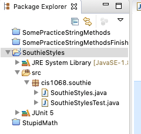
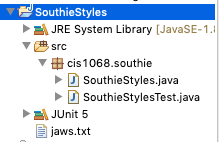

Due: Friday, March 11 Monday, March 14
60 points
This assignment will provide you with practice with String and file processing.
Recall the text from this classic scene from Jaws:
ELLEN: Do you see the kids?
BRODY: Probably out in the back yard.
ELLEN: In Amity, you say 'Yahd.' (she gives it the Boston sound)
BRODY: The kids are in the yahd, playing near the cah. How's that sound?
ELLEN: Like you're from N'Yawk.
(If you don't recall, or if you've never seen the movie, stop reading and watch it immediately. It's one of the best movies of all time.)
In this assignment, you'll help Brody sound like he's from Amity by writing a program that reads in the text of the movie's script, and transforms it so that it when read, the speaker would have a South Boston (or Southie) accent.
Save a copy of the Jaws script to a local directory, and write a program that behaves as follows:
Handling all of the exceptions and idiosyncracies of language is difficult, so for this assignment we will use a few simple rules to approximate the accent.
Your program should be able to recognize these rules and their exceptions whether the letters are upper- or lower-case, however, the output is not required to match the case of the input exactly. For example, if your program reads the word "doOr", it's ok if it outputs "doowah". It does not have to output "doOwah", though you are free to add this feature for extra credit.
Your program will read take it input from a file using Scanner, and will write its output using PrintStream, just as we've done in class. You are not required to handle exceptions, but remember that for any method you write that uses File, you'll need to add throws FileNotFoundException to the top of the method definition.
Don't try to program everything all at once. Do it in parts. First make sure that you can read and write from files. As a first pass, you might try just copying everything from the input to output file without converting anything.
Try to break the rest of the program down into manageable parts, and implement each part as a method. For instance, you might create a method that is passed a single word as an argument, and returns the word converted into a Boston accent. This is a relatively big task, so the method should call other methods to help. Perhaps you might write one for each of the 5 rules. You might also write a method which is passed a String consisting of several words, i.e., a sentence or paragraph, and returns a new String, which is just like the original, but converted into a Boston accent. (It could do this by calling the previous method repeatedly.) Other helpful methods would be ones to find the beginning and ending of quotes (if you're attempting this extra credit option), and an isVowel method, that takes a char value as argument, and returns true if the char is a vowel.
If you're writing a method that does so much that you can't think of how you'd possibly test it, the method is probably is too complicated and does too much. Make it shorter.
If you find something useful, you're welcome to use any of the methods in Java's String class, even if you find some that we have not covered in class or are mentioned in the textbook. (In my own implementation, I have not used any methods in the Java API that we haven't used in class.)
We've read and written to files, however, when reading from relative paths using an IDE there are so many different folders and files in your project folder, the question becomes, "relative to what?"
If we look in the upper-right hand corner of eclipse in the Package Explorer, we see something like this:
If we navigate to our operating system's file manager (for example, Windows Explorer on Windows or Finder on a Mac) to the folder where jaws.txt is stored, and drag the file onto eclipse's project folder (the SouthieStyles folder in the previous picture), the file is copied into our project folder, and can be accessed simply within our project using just the file's name. Eclipse's project view would then look something like this:
We've used Scanner to read text from the user at the keyboard, but it's much more versatile. Scanners actually read and parse text from any source. In this assignment, you might find it useful to attach a Scanner to read an parse Strings. Here are some examples:
This program attaches a Scanner to a String, and reads it word-by-word:
import java.util.Scanner;
public class AttachScannerToString {
public static void main(String args[]) {
String words = "There's always money in the banana stand";
Scanner in = new Scanner(words);
int i=1;
while (in.hasNext()) {
String word = in.next();
System.out.println("word " + i + " is " + word);
i++;
}
}
}
This does the same, separating by commas:
import java.util.Scanner;
public class ScannerDifferentDelimiters {
public static void main(String args[]) {
String movies = "Toy Story,Bug's Life,Toy Story 2,Monsters Inc,Finding Nemo,Incredibles";
Scanner in = new Scanner(movies);
in.useDelimiter(","); // separate based on commas
int i=1;
while (in.hasNext()) {
String movie = in.next();
System.out.println("movie " + i + " is " + movie);
i++;
}
}
}
and this separates based on whitespace or punctuation:
import java.util.Scanner;
import java.util.regex.Pattern;
public class ScannerWhitespacePunctuation {
public static void main(String args[]) {
String conversation = "ELLEN: Do you see the kids?\n" +
"BRODY: Probably out in the back yard.\n" +
"ELLEN: In Amity, you say 'Yahd.'\n\n" +
"(she gives it the Boston sound)\n\n" +
"BRODY: The kids are in the yahd, playing\nnear the cah. How's that sound?\n" +
"ELLEN: Like you're from N'Yawk.\n";
Scanner in = new Scanner(conversation);
in.useDelimiter("[^\\p{Alpha}']+");
int i=1;
while (in.hasNext()) {
String word = in.next();
if (word.equals("'")) // ignore lone apostrophes
continue;
System.out.println("word " + i + " is " + word);
i++;
}
}
}
You might consider not using Scanner at all, and writing code that parses long Strings into individual words by reading character by character, noting that when we read a letter that's preceded by a non-letter (a space, punctuation mark, etc.), we have the start of a new word. Similarly, when we're in the middle of a word and reach a non-letter, we've hit the end of the word.
You are not required to use any of these. Feel free to go about solving the problem any way you choose (provided, of course, that your solution is your own).
Remember that breaking "big" problems into smaller methods shouldn't be considered a chore: it almost always saves you time in the long run. The same can be usually be said about unit tests. At the very least, consider writing a test for a method called convert which is passed a String word and returns the word converted into the Southie accent.
Each of the tests is worth 5 points. You can get extra credit for up to 3 tests, though it doesn't hurt to write more
For most of your tests, you'd likely want to use:
assertEquals(x, y)
The test passes if x is the same as y (it works for primitives as well as Strings), and it doesn't pass if they're not.
For example, suppose you've written a function:
/* for all words whose length > 1 and ends in a, returns
word with 'r' appended
otherwise returns the word itself */
public String appendR(String word)
To create the tests using Eclipse, follow the instructions from the previous assignment. You can take a look at the tests provided in the String Library assignment to get an idea of what goes in them, but for example, to test your appendR( ) function, you could write something as simple as:
@Test
void testAppendR() {
assertEquals("", Southie.appendR(""));
assertEquals("k", Southie.appendR("k"));
assertEquals("A", Southie.appendR("A"));
assertEquals("tunar", Southie.appendR("tuna"));
assertEquals("Cubar", Southie.appendR("Cuba"));
}
For each of the calls to assertEquals(), you're calling your function, passing a parameter, and checking the result. The first parameter is the expected value, the 2nd parameter is the actual value returned by your function.
Instead of using the Jaws script, choose some larger work, perhaps from Project Gutenberg, and instead of rewriting all of the words in a Southie accent, rewrite just dialog, i.e., sequences of text between quotes (" "). Be careful, you might find texts online with some proofreading mistakes where quotes are missing the closing quotation mark.
The capitalization of your modified text exactly matches the capitalization of the original.
Your spacing, punctuation, etc. exactly matches that of the original.
It's ok if your solution doesn't preserve whitespace exactly as it is in the original document. For example, if the original text is:
You're going to need
a bigger boat
and your program produces
You're going to need a bigger boat
it's ok.